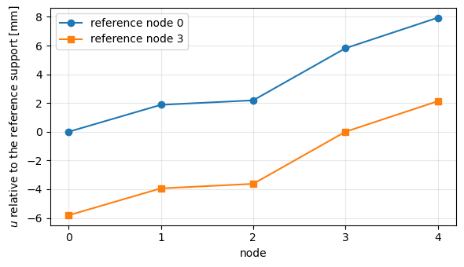
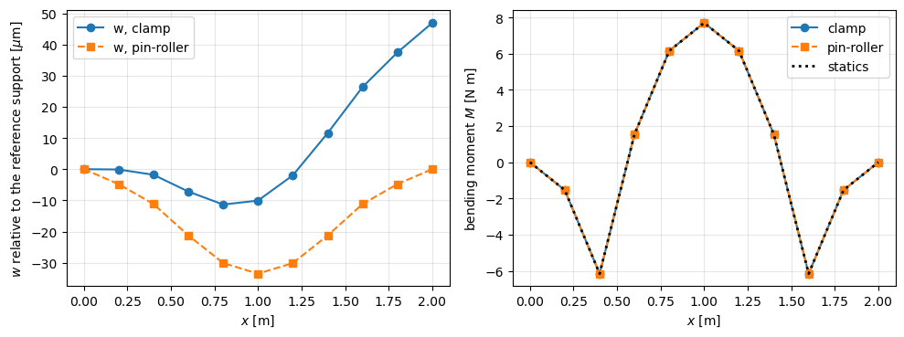
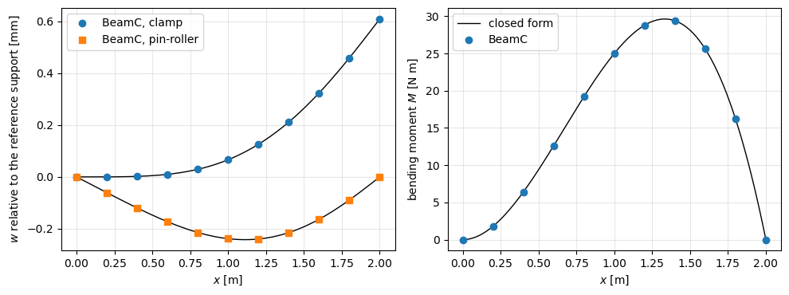

Tutorial: static analysis with inertia relief#
A structure without supports, e.g. a launch vehicle or a spacecraft in flight, can move as a rigid body: its stiffness matrix is singular and the linear static solution cannot be applied as it stands. When the loads are not balanced, the free structure accelerates, and inertia relief balances the loads with the d’Alembert (inertia) forces of this rigid-body acceleration. The displacements are then computed relative to a statically determinate reference support, whose reactions vanish.
The analysis is done by pyfe3d.solver.apply_inertia_relief, from the assembled stiffness matrix KC0 and the mass matrix M of the elements’ update_M, see the user guide page Inertia relief. This notebook verifies it in four cases:
three nodes joined by two springs, a singular system of rank 2, with balanced and unbalanced loads, a fictitious support and inertia relief, derived symbolically and solved with pyfe3d;
a chain of springs and point masses under unbalanced loads, with two reference supports;
a free-free beam of 10
BeamCelements under a balanced load set, its own weight balanced by two point loads and opposite axial end forces;a free-free beam and a free-free bar under an end force, against closed-form solutions derived and checked with SymPy below.
The references are:
Barnett, A. R., Widrick, T. W., Ludwiczak, D. R., Closed-Form Static Analysis with Inertia Relief and Displacement-Dependent Loads Using a MSC/NASTRAN DMAP Alter, NASA TM-106836, NASA Lewis Research Center, Cleveland, OH, 1995, ntrs.nasa.gov/citations/19950013233: p. 2, the quasistatic flight phases and MSC/NASTRAN Solution 91; p. 6, Eqs. (16)-(22), the rigid-body transformation and accelerations; p. 7, Eqs. (23) and (24), the displacements relative to the reference support;
Bathe, K. J., Finite Element Procedures, 2nd ed., K. J. Bathe, Watertown, MA, 2014: Sec. 4.2.2, Eqs. (4.42)-(4.45), the partition into unknown and prescribed displacements and the reactions; Sec. 8.2.5, pp. 726-727, the stiffness matrix of an unrestrained system is positive semi-definite, with one zero eigenvalue per rigid-body mode;
Farhat, C., Géradin, M., On the general solution by a direct method of a large-scale singular system of linear equations: application to the analysis of floating structures, International Journal for Numerical Methods in Engineering, 41(4), 675-696, 1998, doi:10.1002/(SICI)1097-0207(19980228)41:4<675::AID-NME305>3.0.CO;2-8, for the null space of large sparse singular stiffness matrices;
Cavaliere, F., Zlotnik, S., Sevilla, R., Larráyoz, X., Díez, P., Nonintrusive reduced order model for parametric solutions of inertia relief problems, International Journal for Numerical Methods in Engineering, 122(16), 4270-4291, 2021, doi:10.1002/nme.6702, for inertia relief in general.
The models and the same checks are in tests/test_inertia_relief.py, from which the model builders are imported below.
The procedure in pyfe3d notation#
The degrees of freedom are partitioned as in the linear static analysis of pyfe3d, see the overview: bu selects the free degrees of freedom, set \(u\), and bk the constrained ones, set \(k\), with the prescribed values uk. The reference degrees of freedom of inertia relief, the r-set of Barnett et al. (1995, p. 6), belong here to \(k\), and the remaining ones, their l-set, to \(u\). In inertia relief, bk contains the reference degrees of freedom bref, with
uk = 0, plus any degree of freedom that the model itself constrains (bfix below, e.g. the rollers of a model along a line).
The \(n_r\) rigid-body modes are the columns of \(\boldsymbol{\Phi}\), \(\boldsymbol{K}_{C0} \boldsymbol{\Phi} = \boldsymbol{0}\). A static solution \(\boldsymbol{K}_{C0} \boldsymbol{u} = \boldsymbol{F}_{ext}\) exists only when \(\boldsymbol{\Phi}^\top \boldsymbol{F}_{ext} = \boldsymbol{0}\), i.e. when the resultant forces and moments vanish. With a statically determinate reference support, unit displacements at the reference degrees of freedom, \(\boldsymbol{\Phi}_k = \boldsymbol{I}\), give the rigid-body modes from the stiffness matrix itself (Barnett et al. 1995, p. 6, Eq. (19)):
The structure deforms elastically and accelerates as a rigid body, \(\ddot{\boldsymbol{u}} = \boldsymbol{\Phi} \ddot{\boldsymbol{\alpha}}\). Premultiplying \(\boldsymbol{M} \ddot{\boldsymbol{u}} + \boldsymbol{K}_{C0} \boldsymbol{u} = \boldsymbol{F}_{ext}\) by \(\boldsymbol{\Phi}^\top\), with \(\boldsymbol{\Phi}^\top \boldsymbol{K}_{C0} = \boldsymbol{0}\), gives the rigid-body accelerations (Barnett et al. 1995, p. 6, Eqs. (21) and (22)):
The d’Alembert forces \(\boldsymbol{F}_I = -\boldsymbol{M} \boldsymbol{\Phi} \ddot{\boldsymbol{\alpha}}\) balance the external loads, \(\boldsymbol{\Phi}^\top (\boldsymbol{F}_{ext} + \boldsymbol{F}_I) = \boldsymbol{0}\), and the displacements relative to the reference support are (Barnett et al. 1995, p. 7, Eqs. (23) and (24)):
The reactions of the reference support are the residual at the reference degrees of freedom, \(\boldsymbol{R}_k = (\boldsymbol{K}_{C0} \boldsymbol{u} - \boldsymbol{F}_{ext} - \boldsymbol{F}_I)_k\), as in Bathe (2014), Eq. (4.45), or \(\boldsymbol{F}_{{int}_k} - \boldsymbol{f}_k\) in the overview of pyfe3d. Since \(\boldsymbol{R}_u = \boldsymbol{0}\) and \(\boldsymbol{\Phi}^\top \boldsymbol{K}_{C0} = \boldsymbol{0}\), premultiplying the residual by \(\boldsymbol{\Phi}^\top\) gives \(\boldsymbol{\Phi}_k^\top \boldsymbol{R}_k = -\boldsymbol{\Phi}^\top (\boldsymbol{F}_{ext} + \boldsymbol{F}_I) = \boldsymbol{0}\), hence \(\boldsymbol{R}_k = \boldsymbol{0}\): the reference support carries no load.
Choice of the reference support. Any set of \(n_r\) degrees of freedom whose rows \(\boldsymbol{\Phi}_k\) form a non-singular matrix, i.e. a statically determinate support, can be chosen: it suppresses the rigid-body modes without restraining any deformation. The displacements are measured relative to it, and so they change with the choice by a rigid-body motion \(\boldsymbol{\Phi} \boldsymbol{\alpha}\), whereas the strains and internal forces do not. A support with more degrees of freedom than \(n_r\) is statically indeterminate and would carry reactions; one that does not suppress all the rigid-body modes leaves \(\boldsymbol{K}_{{C0}_{uu}}\) singular.
These steps are implemented by pyfe3d.solver.apply_inertia_relief, which also checks that the reference support is statically determinate. Its argument bfix holds the degrees of freedom constrained by the model itself, which are excluded from \(\boldsymbol{\Phi}\).
The small function below collects its results in a dictionary, with the d’Alembert forces \(\boldsymbol{F}_I\), for the printouts of the cases.
[1]:
import os
import sys
sys.path.insert(0, os.path.join('..', '..', 'tests'))
import numpy as np
import sympy as sp
import matplotlib.pyplot as plt
from scipy.sparse import csc_matrix
from scipy.sparse.linalg import spsolve
from pyfe3d import DOF
from test_inertia_relief import (spring_chain, point_masses, spring_forces,
beam_prop, beam_model, geometric_rigid_modes,
beam_end_forces, reference_dofs, chain_data)
from pyfe3d.solver import apply_inertia_relief
def run_inertia_relief(KC0, M, fext, bref, bfix=None):
"""Results of pyfe3d.solver.apply_inertia_relief, with the d'Alembert forces"""
u, acc, Phi, R = apply_inertia_relief(KC0, M, fext, bref, bfix,
return_reactions=True)
finertia = -(M @ (Phi @ acc)) # d'Alembert (inertia) forces
bk = bref if bfix is None else bref | bfix
return dict(u=u, acc=acc, Phi=Phi, R=R, finertia=finertia,
ftot=fext + finertia, bu=~bk)
Case 1: three nodes joined by two springs#
Three nodes along \(x\), a spring \(k_1\) between the nodes 1 and 2 and a spring \(k_2\) between the nodes 2 and 3, the point masses \(m_1\), \(m_2\), \(m_3\) and the forces \(F_1\), \(F_2\), \(F_3\), all able to move only along \(x\). The linear static system
has a stiffness matrix whose rows add to zero, of rank 2, with the rigid translation \(\boldsymbol{\phi} = \{1, 1, 1\}^\top\) in its null space, \(\boldsymbol{K}_{C0} \boldsymbol{\phi} = \boldsymbol{0}\), so its inverse does not exist. Adding the three rows, i.e. premultiplying by \(\boldsymbol{\phi}^\top\), shows that a solution exists only for balanced loads:
Balanced loads. Rows 1 and 3 give \(k_1 (u_2 - u_1) = -F_1\) and \(k_2 (u_3 - u_2) = F_3\), and row 2 is minus their sum. They fix the elongations of the springs but not the position of the system:
with an arbitrary amplitude \(\alpha\) of the rigid translation, which does not change the spring forces.
Fictitious support. Prescribing \(\bar{u}_1 = 0\), a statically determinate support (in pyfe3d notation, bref, part of bk, is the \(x\) degree of freedom of node 1, and bu those of the nodes 2 and 3), the partition gives
and \(\boldsymbol{K}_{{C0}_{uu}} \{u_2, u_3\}^\top = \{F_2, F_3\}^\top\), i.e. \(u_2 = (F_2 + F_3)/k_1\) and \(u_3 = u_2 + F_3/k_2\), with the reaction \(R_1 = -k_1 u_2 - F_1 = -(F_1 + F_2 + F_3)\). For balanced loads, \(u_2 = -F_1/k_1\), the solution above with \(\alpha = 0\), and \(R_1 = 0\): the support does not change the solution. For unbalanced loads, e.g. \(F_1 = F_2 = 0\) and \(F_3 = F\), the support carries the reaction \(R_1 = -F\) and the spring \(k_1\) the full force \(F\), which is not the state of the free system: the fictitious support alone gives unrealistic reactions and internal forces.
Inertia relief. The free system accelerates as a rigid body, and the loads are balanced by the d’Alembert forces of this acceleration. With the same support, now the reference support, the rigid-body mode follows from the stiffness matrix, \(\boldsymbol{\Phi}_u = -\boldsymbol{K}_{{C0}_{uu}}^{-1} \boldsymbol{K}_{{C0}_{uk}} = \{1, 1\}^\top\), i.e. \(\boldsymbol{\Phi} = \boldsymbol{\phi}\), and, with \(\boldsymbol{M} = \mathrm{diag}(m_1, m_2, m_3)\), \(\boldsymbol{\Phi}^\top \boldsymbol{M} \boldsymbol{\Phi} = m_1 + m_2 + m_3\), so
The two free equations are
whose solution, adding the two rows for the first, is
For \(F_1 = F_2 = 0\) and \(F_3 = F\), the spring forces are \(k_1 u_2 = m_1 \ddot{\alpha}\) and \(k_2 (u_3 - u_2) = (m_1 + m_2) \ddot{\alpha}\), the forces that accelerate the masses on the left of each spring, and the reaction of the reference support is \(R_1 = -k_1 u_2 - (F_1 - m_1 \ddot{\alpha}) = 0\). For balanced loads, \(\ddot{\alpha} = 0\) and the fictitious support is recovered.
Reference support at node 3, \(\bar{u}_3 = 0\): the solution changes by the rigid translation \(-u_3 \boldsymbol{\phi}\), and the spring forces are unchanged.
SymPy verifies these expressions:
[2]:
k1, k2, m1, m2, m3, F1, F2, F3, F = sp.symbols('k_1 k_2 m_1 m_2 m_3 F_1 F_2 F_3 F')
K3 = sp.Matrix([[k1, -k1, 0], [-k1, k1 + k2, -k2], [0, -k2, k2]])
M3s = sp.diag(m1, m2, m3)
F3v = sp.Matrix([F1, F2, F3])
print('rank:', K3.rank(), ', null space:', [list(v) for v in K3.nullspace()])
assert K3.rank() == 2 and list(K3.nullspace()[0]) == [1, 1, 1]
assert list(K3*sp.ones(3, 1)) == [0, 0, 0]
# solvability: adding the rows gives F1 + F2 + F3 = 0
u1s, u2s, u3s, alpha = sp.symbols('u_1 u_2 u_3 alpha')
us = sp.Matrix([u1s, u2s, u3s])
assert sp.expand((sp.ones(1, 3)*(K3*us))[0]) == 0
# balanced loads, F2 = -F1 - F3: u = {0, -F1/k1, -F1/k1 + F3/k2} + alpha phi
bal = {F2: -F1 - F3}
u_bal = sp.Matrix([0, -F1/k1, -F1/k1 + F3/k2]) + alpha*sp.ones(3, 1)
assert sp.simplify(K3*u_bal - F3v.subs(bal)) == sp.zeros(3, 1)
print('balanced loads: u =', list(u_bal))
# fictitious support u1 = 0 without inertia forces: R1 = -(F1 + F2 + F3)
u23 = K3[1:, 1:].inv()*F3v[1:, :]
R1_fict = sp.simplify((K3[0, 1:]*u23)[0] - F1)
print('fictitious support: u2 =', sp.factor(u23[0]), ', u3 =', sp.factor(u23[1]),
', R1 =', R1_fict)
assert sp.simplify(u23[0] - (F2 + F3)/k1) == 0
assert sp.simplify(u23[1] - (F2 + F3)/k1 - F3/k2) == 0
assert sp.simplify(R1_fict + F1 + F2 + F3) == 0
assert sp.simplify(R1_fict.subs(bal)) == 0
assert sp.simplify(u23.subs(bal) - u_bal[1:, :].subs(alpha, 0)) == sp.zeros(2, 1)
# reference support at node 1: k = {1}, u = {2, 3}
Kuu = K3[1:, 1:]
Kuk = K3[1:, :1]
print('K_uu =', Kuu.tolist(), ', det =', sp.factor(Kuu.det()), ', K_uk =', list(Kuk))
assert sp.simplify(Kuu.det() - k1*k2) == 0
Phi3 = sp.Matrix.vstack(sp.eye(1), sp.simplify(-Kuu.inv()*Kuk))
assert list(Phi3) == [1, 1, 1]
add3 = sp.simplify(((Phi3.T*M3s*Phi3).inv()*(Phi3.T*F3v))[0])
assert sp.simplify(add3 - (F1 + F2 + F3)/(m1 + m2 + m3)) == 0
Ftot3 = F3v - M3s*Phi3*add3
assert sp.simplify((Phi3.T*Ftot3)[0]) == 0
uu = sp.simplify(Kuu.inv()*Ftot3[1:, :])
u2_cf = (F2 + F3 - (m2 + m3)*add3)/k1
u3_cf = u2_cf + (F3 - m3*add3)/k2
assert sp.simplify(uu[0] - u2_cf) == 0 and sp.simplify(uu[1] - u3_cf) == 0
print('alpha_dd =', add3)
print('u2 =', sp.factor(uu[0]), '\nu3 =', sp.factor(uu[1]))
# F1 = F2 = 0, F3 = F: spring forces and reaction
sub = {F1: 0, F2: 0, F3: F}
a = add3.subs(sub)
N1, N2 = k1*uu[0].subs(sub), k2*(uu[1] - uu[0]).subs(sub)
R1 = -k1*uu[0].subs(sub) - (0 - m1*a)
assert sp.simplify(N1 - m1*a) == 0 and sp.simplify(N2 - (m1 + m2)*a) == 0
assert sp.simplify(R1) == 0
print('F3 = F: k1 u2 =', sp.factor(N1), ', k2 (u3 - u2) =', sp.factor(N2), ', R1 =', sp.simplify(R1))
# reference support at node 3: k = {3}, u = {1, 2}
u_n1 = sp.Matrix([0, uu[0], uu[1]])
Kuu3 = K3[:2, :2]
u12 = sp.simplify(Kuu3.inv()*Ftot3[:2, :])
u_n3 = sp.Matrix([u12[0], u12[1], 0])
assert sp.simplify(u_n3 - (u_n1 - uu[1]*sp.ones(3, 1))) == sp.zeros(3, 1)
print('reference at node 3: u = u(reference at node 1) - u3 phi')
rank: 2 , null space: [[1, 1, 1]]
balanced loads: u = [alpha, -F_1/k_1 + alpha, -F_1/k_1 + F_3/k_2 + alpha]
fictitious support: u2 = (F_2 + F_3)/k_1 , u3 = (F_2*k_2 + F_3*k_1 + F_3*k_2)/(k_1*k_2) , R1 = -F_1 - F_2 - F_3
K_uu = [[k_1 + k_2, -k_2], [-k_2, k_2]] , det = k_1*k_2 , K_uk = [-k_1, 0]
alpha_dd = (F_1 + F_2 + F_3)/(m_1 + m_2 + m_3)
u2 = -(F_1*m_2 + F_1*m_3 - F_2*m_1 - F_3*m_1)/(k_1*(m_1 + m_2 + m_3))
u3 = -(F_1*k_1*m_3 + F_1*k_2*m_2 + F_1*k_2*m_3 + F_2*k_1*m_3 - F_2*k_2*m_1 - F_3*k_1*m_1 - F_3*k_1*m_2 - F_3*k_2*m_1)/(k_1*k_2*(m_1 + m_2 + m_3))
F3 = F: k1 u2 = F*m_1/(m_1 + m_2 + m_3) , k2 (u3 - u2) = F*(m_1 + m_2)/(m_1 + m_2 + m_3) , R1 = 0
reference at node 3: u = u(reference at node 1) - u3 phi
The same model with pyfe3d: two Spring elements with kxe \(= k_1\) and \(k_2\), the other degrees of freedom constrained (bfix), the point masses in a diagonal \(\boldsymbol{M}\), with \(k_1 = 2000\) N/m, \(k_2 = 500\) N/m, \(m_1 = 1\) kg, \(m_2 = 2\) kg, \(m_3 = 3\) kg. First the fictitious support alone, bref without inertia forces, solved as a linear static analysis: for the balanced loads \(F_1 = -5\) N, \(F_2 = 1\) N, \(F_3 = 4\) N
it gives \(u_2 = 2.5\) mm, \(u_3 = 10.5\) mm and \(R_1 = 0\); for \(F_1 = F_2 = 0\), \(F_3 = F = 12\) N, \(u_2 = 6\) mm, \(u_3 = 30\) mm and \(R_1 =
-12\) N. Then inertia relief, with two load sets: \(F_1 = F_2 = 0\), \(F_3 = F =
12\) N, for which \(\ddot{\alpha} = 2\) m/s\(^2\), \(u_2 = 1\) mm and \(u_3 =
13\) mm; and \(F_1 = 3\) N, \(F_2 = -4\) N, \(F_3 = 10\) N. The rank and the null space of the \(3 \times 3\) stiffness matrix of the \(x\) degrees of freedom are computed numerically.
[3]:
from scipy.linalg import null_space
k1_, k2_ = 2000., 500.
mst = np.array([1., 2., 3.])
KCt, bfixt, springst = spring_chain([k1_, k2_])
Mt = point_masses(mst)
Nt = KCt.shape[0]
Kx = KCt.toarray()[0::DOF, 0::DOF]
print('K (x dofs) =\n', Kx)
print('rank =', np.linalg.matrix_rank(Kx), ', row sums =', Kx.sum(axis=1))
ns = null_space(Kx)[:, 0]
print('null space, normalised to node 1:', ns/ns[0])
assert np.linalg.matrix_rank(Kx) == 2
assert np.allclose(ns/ns[0], 1.)
# fictitious support u1 = 0 alone, without inertia forces
bref1 = np.zeros(Nt, dtype=bool)
bref1[0] = True
bu1 = ~(bref1 | bfixt)
for Fs in ([-5., 1., 4.], [0., 0., 12.]):
Fs = np.array(Fs)
fext = np.zeros(Nt)
fext[0::DOF] = Fs
u = np.zeros(Nt)
u[bu1] = spsolve(csc_matrix(KCt)[bu1, :][:, bu1], fext[bu1])
R1 = (KCt @ u - fext)[0]
u2 = (Fs[1] + Fs[2])/k1_
u3 = u2 + Fs[2]/k2_
print('fictitious support, F = %s N: u = %s mm, R1 = %.1e N (closed form %.1e N)'
% (Fs, np.round(1e3*u[0::DOF], 6), R1, -Fs.sum()))
assert np.allclose(u[0::DOF], [0., u2, u3], rtol=1e-12, atol=1e-16)
assert np.isclose(R1, -Fs.sum(), rtol=1e-12, atol=1e-13*abs(Fs).max())
if Fs.sum() == 0:
# the balanced general solution with alpha = 0
assert np.allclose(u[0::DOF], [0., -Fs[0]/k1_, -Fs[0]/k1_ + Fs[2]/k2_],
rtol=1e-12)
for Fs in ([0., 0., 12.], [3., -4., 10.]):
Fs = np.array(Fs)
fext = np.zeros(Nt)
fext[0::DOF] = Fs
acc = Fs.sum()/mst.sum()
u2 = (Fs[1] + Fs[2] - (mst[1] + mst[2])*acc)/k1_
u3 = u2 + (Fs[2] - mst[2]*acc)/k2_
print('\nF =', Fs, 'N, closed form: alpha_dd = %.4f m/s2, u2 = %.4f mm, u3 = %.4f mm'
% (acc, 1e3*u2, 1e3*u3))
out = {}
for r in (0, 2):
bref = np.zeros(Nt, dtype=bool)
bref[DOF*r] = True
o = run_inertia_relief(KCt, Mt, fext, bref, bfixt)
out[r] = o
Nsp = spring_forces(springst, o['u'])
print(' reference node %d: Phi = %s, alpha_dd = %.4f, u = %s mm, spring forces = %s N, '
'R = %.1e N, Phi^T F_tot = %.1e'
% (r + 1, o['Phi'][0::DOF, 0], o['acc'][0], np.round(1e3*o['u'][0::DOF], 6),
np.round(Nsp, 6), o['R'][DOF*r], (o['Phi'].T @ o['ftot'])[0]))
assert np.allclose(o['Phi'][0::DOF, 0], 1., rtol=1e-14)
assert np.isclose(o['acc'][0], acc, rtol=1e-14)
assert abs(o['R'][DOF*r]) < 1e-13*abs(Fs).max()
assert abs(o['Phi'].T @ o['ftot']).max() < 1e-13*abs(Fs).max()
assert np.allclose(Nsp, [k1_*u2, k2_*(u3 - u2)], rtol=1e-12)
assert np.allclose(out[0]['u'][0::DOF], [0., u2, u3], rtol=1e-12, atol=1e-16)
assert np.allclose(out[2]['u'][0::DOF], np.array([0., u2, u3]) - u3, rtol=1e-12, atol=1e-16)
if Fs[0] == Fs[1] == 0:
assert np.isclose(k1_*u2, mst[0]*acc, rtol=1e-12)
assert np.isclose(k2_*(u3 - u2), (mst[0] + mst[1])*acc, rtol=1e-12)
K (x dofs) =
[[ 2000. -2000. 0.]
[-2000. 2500. -500.]
[ 0. -500. 500.]]
rank = 2 , row sums = [0. 0. 0.]
null space, normalised to node 1: [1. 1. 1.]
fictitious support, F = [-5. 1. 4.] N: u = [ 0. 2.5 10.5] mm, R1 = 0.0e+00 N (closed form -0.0e+00 N)
fictitious support, F = [ 0. 0. 12.] N: u = [ 0. 6. 30.] mm, R1 = -1.2e+01 N (closed form -1.2e+01 N)
F = [ 0. 0. 12.] N, closed form: alpha_dd = 2.0000 m/s2, u2 = 1.0000 mm, u3 = 13.0000 mm
reference node 1: Phi = [1. 1. 1.], alpha_dd = 2.0000, u = [ 0. 1. 13.] mm, spring forces = [2. 6.] N, R = 0.0e+00 N, Phi^T F_tot = 0.0e+00
reference node 3: Phi = [1. 1. 1.], alpha_dd = 2.0000, u = [-13. -12. 0.] mm, spring forces = [2. 6.] N, R = 8.9e-16 N, Phi^T F_tot = 0.0e+00
F = [ 3. -4. 10.] N, closed form: alpha_dd = 1.5000 m/s2, u2 = -0.7500 mm, u3 = 10.2500 mm
reference node 1: Phi = [1. 1. 1.], alpha_dd = 1.5000, u = [ 0. -0.75 10.25] mm, spring forces = [-1.5 5.5] N, R = 0.0e+00 N, Phi^T F_tot = 0.0e+00
reference node 3: Phi = [1. 1. 1.], alpha_dd = 1.5000, u = [-10.25 -11. 0. ] mm, spring forces = [-1.5 5.5] N, R = 8.9e-16 N, Phi^T F_tot = 0.0e+00
With the fictitious support alone, the balanced loads give the general solution with \(\alpha = 0\) and no reaction, whereas the unbalanced loads give the reaction \(-(F_1 + F_2 + F_3)\). With inertia relief, the rank, the null space, \(\boldsymbol{\Phi}\), \(\ddot{\alpha}\), \(u_2\), \(u_3\) and the spring forces match the closed form, the reaction of the reference support vanishes, and moving the reference support from node 1 to node 3 shifts every displacement by \(-u_3\) without changing the spring forces.
Case 2: a chain of springs and point masses#
Five point masses \(m_i\) joined by four springs \(k_j\) along \(x\), free-free, under unbalanced loads \(F_i\). As in case 1, the rigid-body acceleration is \(\ddot{\alpha} = \sum_i F_i / \sum_i m_i\) and the inertia forces are \(-m_i \ddot{\alpha}\). Cutting the spring \(j\), between the nodes \(j\) and \(j + 1\) (numbered from 0), the equilibrium of the part to its right with the inertia forces gives the spring force, positive in tension,
and the displacements relative to the reference node \(r\) follow from \(u_{j+1} - u_j = N_j / k_j\) with \(u_r = 0\). Two reference supports are used, node 0 and node 3; both are statically determinate (one degree of freedom for the one rigid-body mode). The spring forces must be the same, and the displacements must differ by a rigid translation.
[4]:
ks, ms, Fc = chain_data()
print('k_j [N/m] =', ks, '\nm_i [kg] =', ms, '\nF_i [N] =', Fc)
KC0c, bfix_c, springs_c = spring_chain(ks)
Mc = point_masses(ms)
Nc = KC0c.shape[0]
fext_c = np.zeros(Nc)
fext_c[0::DOF] = Fc
acc_ref = Fc.sum()/ms.sum()
Nj_ref = np.array([(Fc[j+1:] - ms[j+1:]*acc_ref).sum() for j in range(len(ks))])
res = {}
for r in (0, 3):
bref = np.zeros(Nc, dtype=bool)
bref[DOF*r] = True
out = run_inertia_relief(KC0c, Mc, fext_c, bref, bfix_c)
res[r] = out
u_ref = np.concatenate(([0.], np.cumsum(Nj_ref/ks)))
u_ref -= u_ref[r]
print('\nreference node %d' % r)
print(' alpha_dd = %.6f m/s2 (closed form %.6f)' % (out['acc'][0], acc_ref))
print(' inertia forces [N] =', np.round(out['finertia'][0::DOF], 6))
print(' Phi^T F_tot = %.1e' % (out['Phi'].T @ out['ftot'])[0])
print(' reaction R_r [N] = %.1e' % out['R'][DOF*r])
print(' spring forces FE [N] =', np.round(spring_forces(springs_c, out['u']), 6))
print(' closed form [N] =', np.round(Nj_ref, 6))
print(' u FE [mm] =', np.round(1e3*out['u'][0::DOF], 6))
print(' u closed form [mm] =', np.round(1e3*u_ref, 6))
assert np.isclose(out['acc'][0], acc_ref, rtol=1e-14)
assert abs(out['R'][DOF*r]) < 1e-13*abs(Fc).max()
assert abs(out['Phi'].T @ out['ftot']).max() < 1e-13*abs(Fc).max()
assert np.allclose(spring_forces(springs_c, out['u']), Nj_ref, rtol=1e-12)
assert np.allclose(out['u'][0::DOF], u_ref, rtol=1e-12, atol=1e-16)
diff = res[3]['u'][0::DOF] - res[0]['u'][0::DOF]
print('\nu(ref 3) - u(ref 0) [mm] =', np.round(1e3*diff, 6), '(a rigid translation)')
assert np.allclose(diff, diff[0], rtol=1e-12)
k_j [N/m] = [1000. 2000. 1500. 3000.]
m_i [kg] = [1. 2. 1.5 0.5 3. ]
F_i [N] = [ 0. 5. -2. 0. 12.]
reference node 0
alpha_dd = 1.875000 m/s2 (closed form 1.875000)
inertia forces [N] = [-1.875 -3.75 -2.8125 -0.9375 -5.625 ]
Phi^T F_tot = 1.3e-15
reaction R_r [N] = -8.9e-16
spring forces FE [N] = [1.875 0.625 5.4375 6.375 ]
closed form [N] = [1.875 0.625 5.4375 6.375 ]
u FE [mm] = [0. 1.875 2.1875 5.8125 7.9375]
u closed form [mm] = [0. 1.875 2.1875 5.8125 7.9375]
reference node 3
alpha_dd = 1.875000 m/s2 (closed form 1.875000)
inertia forces [N] = [-1.875 -3.75 -2.8125 -0.9375 -5.625 ]
Phi^T F_tot = 4.4e-16
reaction R_r [N] = 5.6e-16
spring forces FE [N] = [1.875 0.625 5.4375 6.375 ]
closed form [N] = [1.875 0.625 5.4375 6.375 ]
u FE [mm] = [-5.8125 -3.9375 -3.625 0. 2.125 ]
u closed form [mm] = [-5.8125 -3.9375 -3.625 0. 2.125 ]
u(ref 3) - u(ref 0) [mm] = [-5.8125 -5.8125 -5.8125 -5.8125 -5.8125] (a rigid translation)
[5]:
fig, ax = plt.subplots(figsize=(6, 3.5))
xn = np.arange(len(ms))
for r, marker in [(0, 'o'), (3, 's')]:
ax.plot(xn, 1e3*res[r]['u'][0::DOF], marker=marker, label='reference node %d' % r)
ax.set_xlabel('node')
ax.set_ylabel('$u$ relative to the reference support [mm]')
ax.set_xticks(xn)
ax.grid(True, alpha=0.3)
ax.legend()
plt.tight_layout()
plt.show()

The rigid-body acceleration, the inertia forces and the spring forces are those of the closed form and do not depend on the reference node; the displacements, measured from the reference node, differ by the rigid translation \(u_3 - u_0\) of the first solution.
Case 3: a free-free beam under a balanced load set#
A steel beam of length \(L = 2\) m along the global \(x\) axis, rectangular cross section of width \(b = 0.02\) m along \(y\) and height \(h = 0.05\) m along \(z\), \(E = 210\) GPa, \(G = E/2.6\), \(\rho = 7850\) kg/m\(^3\), is modelled with 10 BeamC elements and the consistent mass matrix (mtype=0), with the rotary inertia of the section. The element axes are the global axes. It has six rigid-body modes and no support.
The loads are:
its own weight, as the product of the mass matrix and the uniform acceleration field \(-g\) along \(z\), \(\boldsymbol{F}_g = \boldsymbol{M} \boldsymbol{a}_g\), \(g = 9.81\) m/s\(^2\), whose resultant is \(-W\) with \(W = m L g\) and \(m = \rho A\), applied at the centre of mass \(x = L/2\);
two upward point loads \(W/2\) along \(+z\) at the nodes \(x = a = 0.4\) m and \(x = L - a = 1.6\) m, symmetric about the centre of mass, such that the resultant force along \(z\) and the resultant moment about \(y\) vanish;
opposite axial forces, \(-P\) at \(x = 0\) and \(+P\) at \(x = L\), \(P = 1000\) N.
The load set is balanced in force and moment, so inertia relief must give zero rigid-body accelerations and zero reactions of the reference support, to round-off. Two statically determinate reference supports are used: the six degrees of freedom of the first node ('clamp'), and \(u, v, w, r_x\) of the first node with \(v, w\) of the last node ('pin-roller').
[6]:
L3, nel3, g, Pax, a3 = 2., 10, 9.81, 1000., 0.4
prop3 = beam_prop() # rotary inertia included
xs3, KC03, M3, beams3 = beam_model(L3, nel3, prop3, mtype=0)
N3 = KC03.shape[0]
m3 = prop3.intrho
agrav = np.zeros(N3)
agrav[2::DOF] = -g # uniform acceleration field -g along z
fgrav = M3 @ agrav # own weight, consistent nodal loads
W = -fgrav[2::DOF].sum()
fext3 = fgrav.copy()
for xa in (a3, L3 - a3):
fext3[DOF*np.argmin(abs(xs3 - xa)) + 2] += W/2
fext3[0] -= Pax
fext3[DOF*nel3] += Pax
print('W from M a_g = %.6f N, m L g = %.6f N' % (W, m3*L3*g))
assert np.isclose(W, m3*L3*g, rtol=1e-13)
Phig = geometric_rigid_modes(xs3) # translations and rotations about the origin
print('resultants of the external loads, Phi_geo^T F_ext =', Phig.T @ fext3)
assert abs(Phig.T @ fext3).max() < 1e-12*W
W from M a_g = 154.017000 N, m L g = 154.017000 N
resultants of the external loads, Phi_geo^T F_ext = [ 0.00000000e+00 0.00000000e+00 4.44089210e-15 0.00000000e+00
-2.24265051e-14 0.00000000e+00]
The rigid-body modes computed from the stiffness matrix, \(\boldsymbol{\Phi} = [-\boldsymbol{K}_{{C0}_{uu}}^{-1} \boldsymbol{K}_{{C0}_{uk}}; \boldsymbol{I}]\), satisfy \(\boldsymbol{K}_{C0} \boldsymbol{\Phi} = \boldsymbol{0}\) and span the same space as the geometric rigid-body modes, translations and rotations about the origin: the least-squares fit \(\boldsymbol{\Phi}_{geo} \boldsymbol{C} = \boldsymbol{\Phi}\) has a zero residual. \(\boldsymbol{\Phi}^\top \boldsymbol{M} \boldsymbol{\Phi}\) is the \(6 \times 6\) rigid-body mass matrix about the reference node.
[7]:
res3 = {}
for choice in ('clamp', 'pin-roller'):
bref = reference_dofs(len(xs3), choice)
out = run_inertia_relief(KC03, M3, fext3, bref)
res3[choice] = out
Phi = out['Phi']
C = np.linalg.lstsq(Phig, Phi, rcond=None)[0]
print('reference support: %s' % choice)
print(' max |K_C0 Phi| / max |K_C0| = %.1e' % (abs(KC03 @ Phi).max()/abs(KC03).max()))
print(' residual of Phi_geo C = Phi = %.1e' % abs(Phig @ C - Phi).max())
print(' rigid-body accelerations =', np.array2string(out['acc'], precision=2))
print(' Phi^T F_tot =', np.array2string(Phi.T @ out['ftot'], precision=2))
print(' reactions R_k =', np.array2string(out['R'][bref], precision=2))
print(' max |R_u| = %.1e' % abs(out['R'][out['bu']]).max())
assert abs(KC03 @ Phi).max() < 1e-6*abs(KC03).max()
assert abs(Phig @ C - Phi).max() < 1e-10
assert abs(out['acc'][:3]).max() < 1e-12*g
assert abs(Phi.T @ out['ftot']).max() < 1e-10*W
assert abs(out['R'][bref]).max() < 1e-10*W
print('\nPhi^T M Phi with the clamp at x = 0 (m L = %.4f kg, m L^3/3 = %.4f kg m2):'
% (m3*L3, m3*L3**3/3))
print(np.array2string(res3['clamp']['Phi'].T @ (M3 @ res3['clamp']['Phi']), precision=4))
reference support: clamp
max |K_C0 Phi| / max |K_C0| = 1.1e-16
residual of Phi_geo C = Phi = 5.8e-13
rigid-body accelerations = [ 1.45e-14 0.00e+00 -2.03e-14 0.00e+00 -1.49e-14 -0.00e+00]
Phi^T F_tot = [ 2.27e-13 0.00e+00 -9.71e-15 0.00e+00 -4.61e-15 0.00e+00]
reactions R_k = [ 0.00e+00 0.00e+00 -7.37e-14 0.00e+00 1.68e-14 0.00e+00]
max |R_u| = 2.2e-13
reference support: pin-roller
max |K_C0 Phi| / max |K_C0| = 1.1e-16
residual of Phi_geo C = Phi = 8.9e-14
rigid-body accelerations = [1.45e-14 0.00e+00 3.90e-14 0.00e+00 0.00e+00 2.50e-14]
Phi^T F_tot = [ 2.27e-13 0.00e+00 -3.25e-15 0.00e+00 0.00e+00 7.47e-15]
reactions R_k = [0.00e+00 0.00e+00 2.84e-14 0.00e+00 0.00e+00 4.35e-14]
max |R_u| = 4.9e-13
Phi^T M Phi with the clamp at x = 0 (m L = 15.7000 kg, m L^3/3 = 20.9333 kg m2):
[[ 1.5700e+01 0.0000e+00 0.0000e+00 0.0000e+00 0.0000e+00 0.0000e+00]
[ 0.0000e+00 1.5700e+01 0.0000e+00 0.0000e+00 0.0000e+00 1.5700e+01]
[ 0.0000e+00 0.0000e+00 1.5700e+01 0.0000e+00 -1.5700e+01 0.0000e+00]
[ 0.0000e+00 0.0000e+00 0.0000e+00 3.7942e-03 0.0000e+00 0.0000e+00]
[ 0.0000e+00 0.0000e+00 -1.5700e+01 0.0000e+00 2.0937e+01 0.0000e+00]
[ 0.0000e+00 1.5700e+01 0.0000e+00 0.0000e+00 0.0000e+00 2.0934e+01]]
The rigid-body accelerations, the reactions of both reference supports and \(\boldsymbol{\Phi}^\top \boldsymbol{F}_{tot}\) vanish to round-off: for a balanced load set, inertia relief reduces to the fictitious support of the singular static problem.
The internal forces follow from the end forces of each element, finte of update_probe_finte, minus the element’s own share of the distributed load, \(\boldsymbol{M}_e \boldsymbol{a}_g\) (the beam_end_forces function of the test). Taking the bending moment \(M(x)\) as the moment about \(y\) at the first node of each element, it is compared with the statics of the beam,
with \(\langle x - a \rangle = \max(x - a, 0)\), and the axial force with \(P\).
[8]:
Mcf3 = (-m3*g*xs3**2/2 + W/2*np.clip(xs3 - a3, 0, None)
+ W/2*np.clip(xs3 - (L3 - a3), 0, None))
fig, axes = plt.subplots(1, 2, figsize=(10, 3.8))
for choice, ls in [('clamp', '-o'), ('pin-roller', '--s')]:
out = res3[choice]
S = beam_end_forces(beams3, prop3, out['u'], M3, agrav)
Mfe = np.append(S[:, 4], -S[-1, 10])
print('%-10s max |M_FE - M_statics| = %.1e N m, axial forces [N]: %s'
% (choice, abs(Mfe - Mcf3).max(), np.unique(np.round(S[:, 6], 9))))
assert np.allclose(Mfe, Mcf3, atol=1e-10*abs(Mcf3).max())
assert np.allclose(S[:, 6], Pax, rtol=1e-12)
axes[0].plot(xs3, 1e6*out['u'][2::DOF], ls, label='w, %s' % choice)
axes[1].plot(xs3, Mfe, ls, label=choice)
axes[1].plot(xs3, Mcf3, 'k:', lw=2, label='statics')
axes[0].set_ylabel(r'$w$ relative to the reference support [$\mu$m]')
axes[1].set_ylabel('bending moment $M$ [N m]')
for ax in axes:
ax.set_xlabel('$x$ [m]')
ax.grid(True, alpha=0.3)
ax.legend()
plt.tight_layout()
plt.show()
du = res3['pin-roller']['u'] - res3['clamp']['u']
C = np.linalg.lstsq(Phig, du, rcond=None)[0]
print('difference of the two solutions = rigid-body motion, residual %.1e m'
% abs(Phig @ C - du).max())
print('axial elongation u(L) - u(0) = %.4e m, P L/(E A) = %.4e m'
% (res3['clamp']['u'][DOF*nel3] - res3['clamp']['u'][0], Pax*L3/(prop3.E*prop3.A)))
assert abs(Phig @ C - du).max() < 1e-12*abs(du).max()
assert np.isclose(res3['clamp']['u'][DOF*nel3], Pax*L3/(prop3.E*prop3.A), rtol=1e-12)
clamp max |M_FE - M_statics| = 6.5e-14 N m, axial forces [N]: [1000.]
pin-roller max |M_FE - M_statics| = 5.8e-14 N m, axial forces [N]: [1000.]

difference of the two solutions = rigid-body motion, residual 6.3e-19 m
axial elongation u(L) - u(0) = 9.5238e-06 m, P L/(E A) = 9.5238e-06 m
The deformed shape depends on the reference support: relative to the clamp at \(x = 0\) the beam deflects as a cantilever, relative to the pin-roller as a simply supported beam. The two differ by a rigid-body motion, while the bending moment, equal to the statics, and the axial force \(P\) are the same.
Case 4: free-free beam and bar under an end force, closed form#
Beam. A uniform free-free beam of length \(L\), mass per unit length \(m\), bending stiffness \(E I\) and shear stiffness \(G A\), under a transverse force \(P\) along \(+z\) at \(x = L\). With \(\theta\) the rigid rotation such that the rigid-body deflection is \(w = w_c + \theta (x - L/2)\), Newton’s and Euler’s equations, about the centre of mass with \(J = m L^3/12\), give
The rigid-body acceleration field is \(\ddot{w}(x) = \frac{P}{m L} \left( \frac{6 x}{L} - 2 \right)\), e.g. \(\ddot{w}(0) = -2 P/(m L)\) and \(\ddot{w}(L) = 4 P/(m L)\), and the inertia load per unit length is linear in \(x\):
whose resultant, \(-P\), and moment, \(-P L\) about \(x = 0\), balance the end force. In pyfe3d’s convention, the rotation \(r_y\) moves the point \(x\) of the axis by \(w = -x \, r_y\), so \(\ddot{r}_y = -\ddot{\theta}\).
The deflection relative to the reference support follows from the Timoshenko beam with the strains of BeamC, curvature \(r_y'\) and shear strain \(\gamma
= w' + r_y\). The stationarity of \(\Pi = \int_0^L \left[ \frac{E I}{2}
r_y'^2 + \frac{G A}{2} (w' + r_y)^2 - q w \right] dx - P w(L)\) gives, with the shear force \(Q = G A (w' + r_y)\),
with the natural (free-end) conditions \(Q(0) = 0\), \(r_y'(0) = 0\), \(Q(L) = P\), \(r_y'(L) = 0\). Integrating from the free end \(x = 0\), \(Q = -\int_0^x q \, dx\) and \(E I r_y' = \int_0^x Q \, dx = -M(x)\), with
The conditions at \(x = L\) are then satisfied automatically, because the loads are balanced. Integrating once more, \(w' = Q/(G A) - r_y\), and
where \(c_0\) and \(c_1\), a rigid-body motion, are fixed by the reference support: \(c_0 = c_1 = 0\) for the clamp at \(x = 0\) (\(w = r_y = 0\), and \(Q(0) = 0\) gives \(w'(0) = 0\)); \(c_0 = 0\), \(c_1 = -P L^2/(30 E I)\) for the pin-roller \(w(0) = w(L) = 0\). The first term is the Euler-Bernoulli solution of \(E I w'''' = q\) with the free-end conditions \(w''(0) = w'''(0) = 0\), the second the shear deflection. The end deflection relative to the clamp is \(w(L) = P L^3/(30 E I)\), and the bending moment is largest at \(x = 2L/3\), \(M = 4 P L/27\).
Bar. A free-free bar of axial stiffness \(E A\) under an axial force \(P\) at \(x = L\): \(\ddot{u} = P/(m L)\), the inertia load \(n = -P/L\), and \((E A u')' = -n\) with \(E A u'(0) = 0\) gives the axial force \(N(x) = E A u' = P x/L\), with \(N(L) = P\) automatically, and, relative to \(u(0) = 0\),
SymPy checks these expressions below, independently of the derivation above: Newton-Euler from the acceleration field, the integration of the Timoshenko equations, the free-end conditions at \(x = L\), the Euler-Bernoulli limit and the bar.
[9]:
x, s, L, P, m, EI, GA, EA = sp.symbols('x s L P m EI GA EA', positive=True)
wc, th = sp.symbols('wc_dd theta_dd')
# Newton-Euler: resultant and moment about the centre of mass of m*acc = loads
acc = wc + th*(x - L/2)
sol = sp.solve([sp.integrate(m*acc, (x, 0, L)) - P,
sp.integrate(m*acc*(x - L/2), (x, 0, L)) - P*L/2], [wc, th])
print('Newton-Euler:', sol)
assert sp.simplify(sol[wc] - P/(m*L)) == 0 and sp.simplify(sol[th] - 6*P/(m*L**2)) == 0
q = sp.expand(-m*acc.subs(sol))
print('q(x) =', sp.factor(q))
assert sp.simplify(q - P/L*(2 - 6*x/L)) == 0
# Timoshenko: Q' = -q, Q(0) = 0; EI ry'' = Q, ry'(0) = 0
Q = -sp.integrate(q.subs(x, s), (s, 0, x))
dry = sp.integrate(Q.subs(x, s), (s, 0, x))/EI
Mx = sp.factor(-EI*dry)
print('M(x) =', Mx)
assert sp.simplify(Q.subs(x, L) - P) == 0 # Q(L) = P automatically
assert sp.simplify(dry.subs(x, L)) == 0 # ry'(L) = 0 automatically
assert sp.simplify(Mx - P*x**2*(L - x)/L**2) == 0
c0, c1 = sp.symbols('c0 c1')
ry = sp.integrate(dry.subs(x, s), (s, 0, x)) - c1 # ry(0) = -c1
w = sp.integrate((Q/GA - ry).subs(x, s), (s, 0, x)) + c0
# the equations and all boundary conditions
assert sp.simplify(sp.diff(GA*(sp.diff(w, x) + ry), x) + q) == 0
assert sp.simplify(EI*sp.diff(ry, x, 2) - GA*(sp.diff(w, x) + ry)) == 0
w_cf = P/(EI*L**2)*(L*x**4/12 - x**5/20) - Mx/GA + c0 + c1*x
assert sp.simplify(w - w_cf) == 0
# Euler-Bernoulli limit: EI w(4) = q, w2(0) = w3(0) = 0 (derivatives)
w_eb = P/(EI*L**2)*(L*x**4/12 - x**5/20)
assert sp.simplify(EI*sp.diff(w_eb, x, 4) - q) == 0
assert sp.diff(w_eb, x, 2).subs(x, 0) == 0 and sp.diff(w_eb, x, 3).subs(x, 0) == 0
# reference supports
w_clamp = w.subs({c0: 0, c1: 0})
c1_pr = sp.solve(w.subs({c0: 0}).subs(x, L), c1)[0]
print('clamp: w(L) =', sp.simplify(w_clamp.subs(x, L)),
'; pin-roller: c1 =', sp.simplify(c1_pr))
assert sp.simplify(w_clamp.subs(x, L) - P*L**3/(30*EI)) == 0
assert sp.simplify(c1_pr + P*L**2/(30*EI)) == 0
xm = sp.solve(sp.diff(Mx, x), x)
print('maximum moment at x =', xm, ', M =', [sp.simplify(Mx.subs(x, v)) for v in xm])
# bar: (EA u')' = -n, n = -m*P/(m*L), EA u'(0) = 0
n = -m*P/(m*L)
Nx = -sp.integrate(n.subs(x, s), (s, 0, x))
u_bar = sp.integrate((Nx/EA).subs(x, s), (s, 0, x))
assert sp.simplify(Nx.subs(x, L) - P) == 0
assert sp.simplify(u_bar - P*x**2/(2*EA*L)) == 0
print('bar: N(x) =', Nx, ', u(x) =', u_bar)
Newton-Euler: {theta_dd: 6*P/(L**2*m), wc_dd: P/(L*m)}
q(x) = -2*P*(-L + 3*x)/L**2
M(x) = -P*x**2*(-L + x)/L**2
clamp: w(L) = L**3*P/(30*EI) ; pin-roller: c1 = -L**2*P/(30*EI)
maximum moment at x = [2*L/3] , M = [4*L*P/27]
bar: N(x) = P*x/L , u(x) = P*x**2/(2*EA*L)
Finite element model. The beam of case 3, \(L = 2\) m, 10 BeamC elements, with \(P = 100\) N at \(x = L\) along \(+z\). Two choices make the model and the closed form describe the same beam: the shear correction factor \(5/6\) is put in prop.G (\(G A\) above is prop.G*prop.A); and the rotary inertia of the bending in the plane \(xz\), intrhoz2, is set to zero, as in the closed form (the rotary inertia about \(x\), intrhoy2, is kept, so that
\(\boldsymbol{\Phi}^\top \boldsymbol{M} \boldsymbol{\Phi}\) stays non-singular).
With the consistent mass matrix, the nodal deflections of BeamC match the closed form to round-off, so the tolerance is \(10^{-9}\) relative to the largest deflection, independent of the mesh; the bending moment is recovered as in case 3. With the lumped mass matrix (mtype=1), the inertia load is lumped at the nodes and the deflection converges with the mesh: the relative error, measured with 10, 20 and 40 elements, is \(0.75/n^2\) to \(0.80/n^2\) for the clamp and
\(1.10/n^2\) for the pin-roller, and the tolerance asserted is \(1.5/n^2\) for \(n\) elements.
[10]:
L4, P4 = 2., 100.
prop4 = beam_prop(rotary_xz=False)
prop4.G = 5/6*prop4.E/2.6
m4, EI4, GA4 = prop4.intrho, prop4.E*prop4.Iyy, prop4.G*prop4.A
w_np = sp.lambdify((x, L, P, EI, GA, c0, c1), w_cf)
M_np = sp.lambdify((x, L, P), Mx)
def closed_form(xs, choice):
cc1 = 0. if choice == 'clamp' else -P4*L4**2/(30*EI4)
return w_np(xs, L4, P4, EI4, GA4, 0., cc1), M_np(xs, L4, P4)
res4 = {}
xs4, KC04, M4, beams4 = beam_model(L4, 10, prop4, mtype=0)
fext4 = np.zeros(KC04.shape[0])
fext4[DOF*10 + 2] = P4
for choice in ('clamp', 'pin-roller'):
out = run_inertia_relief(KC04, M4, fext4, reference_dofs(len(xs4), choice))
res4[choice] = out
wcf, Mcf = closed_form(xs4, choice)
S = beam_end_forces(beams4, prop4, out['u'], M4, -(out['Phi'] @ out['acc']))
Mfe = np.append(S[:, 4], -S[-1, 10])
err_w = abs(out['u'][2::DOF] - wcf).max()/abs(wcf).max()
err_M = abs(Mfe - Mcf).max()/abs(Mcf).max()
print('reference support: %s' % choice)
print(' accelerations of the reference dofs:', np.array2string(out['acc'], precision=5))
print(' Phi^T F_tot = %.1e, reactions = %.1e'
% (abs(out['Phi'].T @ out['ftot']).max(), abs(out['R'][reference_dofs(len(xs4), choice)]).max()))
print(' %6s %14s %14s %12s %12s' % ('x [m]', 'w FE [mm]', 'w closed [mm]', 'M FE [N m]', 'M closed'))
for xi, wf, wc_, mf, mc in zip(xs4, out['u'][2::DOF], wcf, Mfe, Mcf):
print(' %6.2f %14.8f %14.8f %12.6f %12.6f' % (xi, 1e3*wf, 1e3*wc_, mf, mc))
print(' relative error: w %.1e, M %.1e' % (err_w, err_M))
assert err_w < 1e-9 and err_M < 1e-10
assert abs(out['Phi'].T @ out['ftot']).max() < 1e-10*P4
if choice == 'clamp':
# Newton-Euler at the first node: w'' = -2P/(mL), ry'' = -6P/(mL^2)
assert np.isclose(out['acc'][2], -2*P4/(m4*L4), rtol=1e-12)
assert np.isclose(out['acc'][4], -6*P4/(m4*L4**2), rtol=1e-12)
print(' Newton-Euler: w0_dd = %.6f, ry0_dd = %.6f m/s2, rad/s2'
% (-2*P4/(m4*L4), -6*P4/(m4*L4**2)))
else:
assert np.isclose(out['acc'][2], -2*P4/(m4*L4), rtol=1e-12)
assert np.isclose(out['acc'][5], 4*P4/(m4*L4), rtol=1e-12)
print(' Newton-Euler: w_dd(0) = %.6f, w_dd(L) = %.6f m/s2'
% (-2*P4/(m4*L4), 4*P4/(m4*L4)))
print('\nshear deflection max |M/(G A)| / max |w_clamp| = %.1e'
% (abs(closed_form(xs4, 'clamp')[1]).max()/GA4/abs(closed_form(xs4, 'clamp')[0]).max()))
reference support: clamp
accelerations of the reference dofs: [ 0. 0. -12.73885 0. -19.10828 -0. ]
Phi^T F_tot = 2.5e-14, reactions = 3.9e-12
x [m] w FE [mm] w closed [mm] M FE [N m] M closed
0.00 0.00000000 0.00000000 -0.000000 0.000000
0.20 0.00011650 0.00011650 1.800000 1.800000
0.40 0.00205044 0.00205044 6.400000 6.400000
0.60 0.00993394 0.00993394 12.600000 12.600000
0.80 0.02936198 0.02936198 19.200000 19.200000
1.00 0.06629524 0.06629524 25.000000 25.000000
1.20 0.12596297 0.12596297 28.800000 28.800000
1.40 0.21176587 0.21176587 29.400000 29.400000
1.60 0.32417890 0.32417890 25.600000 25.600000
1.80 0.45965417 0.45965417 16.200000 16.200000
2.00 0.60952381 0.60952381 -0.000000 -0.000000
relative error: w 1.0e-13, M 1.3e-13
Newton-Euler: w0_dd = -12.738854, ry0_dd = -19.108280 m/s2, rad/s2
reference support: pin-roller
accelerations of the reference dofs: [ 0. 0. -12.73885 0. 0. 25.47771]
Phi^T F_tot = 5.4e-15, reactions = 7.2e-13
x [m] w FE [mm] w closed [mm] M FE [N m] M closed
0.00 0.00000000 0.00000000 -0.000000 0.000000
0.20 -0.06083589 -0.06083589 1.800000 1.800000
0.40 -0.11985432 -0.11985432 6.400000 6.400000
0.60 -0.17292320 -0.17292320 12.600000 12.600000
0.80 -0.21444754 -0.21444754 19.200000 19.200000
1.00 -0.23846667 -0.23846667 25.000000 25.000000
1.20 -0.23975131 -0.23975131 28.800000 28.800000
1.40 -0.21490080 -0.21490080 29.400000 29.400000
1.60 -0.16344015 -0.16344015 25.600000 25.600000
1.80 -0.08891726 -0.08891726 16.200000 16.200000
2.00 0.00000000 -0.00000000 -0.000000 -0.000000
relative error: w 3.1e-14, M 4.1e-14
Newton-Euler: w_dd(0) = -12.738854, w_dd(L) = 25.477707 m/s2
shear deflection max |M/(G A)| / max |w_clamp| = 7.2e-04
[11]:
print('lumped mass matrix (mtype=1), relative error of the deflection')
print('%5s %14s %14s' % ('n', 'clamp n^2 err', 'pin-roller n^2 err'))
for nel in (10, 20, 40):
xs_, KC0_, M_, beams_ = beam_model(L4, nel, prop4, mtype=1)
f_ = np.zeros(KC0_.shape[0])
f_[DOF*nel + 2] = P4
errs = []
for choice in ('clamp', 'pin-roller'):
out = run_inertia_relief(KC0_, M_, f_, reference_dofs(len(xs_), choice))
wcf = closed_form(xs_, choice)[0]
errs.append(abs(out['u'][2::DOF] - wcf).max()/abs(wcf).max())
assert errs[-1] < 1.5/nel**2
print('%5d %14.3f %14.3f' % (nel, nel**2*errs[0], nel**2*errs[1]))
lumped mass matrix (mtype=1), relative error of the deflection
n clamp n^2 err pin-roller n^2 err
10 0.752 1.101
20 0.791 1.096
40 0.798 1.098
[12]:
xf = np.linspace(0, L4, 201)
fig, axes = plt.subplots(1, 2, figsize=(10, 3.8))
for choice, mk in [('clamp', 'o'), ('pin-roller', 's')]:
wcf_f, Mcf_f = closed_form(xf, choice)
axes[0].plot(xf, 1e3*wcf_f, 'k-', lw=1)
axes[0].plot(xs4, 1e3*res4[choice]['u'][2::DOF], mk, label='BeamC, %s' % choice)
axes[1].plot(xf, closed_form(xf, 'clamp')[1], 'k-', lw=1, label='closed form')
S = beam_end_forces(beams4, prop4, res4['clamp']['u'], M4,
-(res4['clamp']['Phi'] @ res4['clamp']['acc']))
axes[1].plot(xs4, np.append(S[:, 4], -S[-1, 10]), 'o', label='BeamC')
axes[0].set_ylabel('$w$ relative to the reference support [mm]')
axes[1].set_ylabel('bending moment $M$ [N m]')
for ax in axes:
ax.set_xlabel('$x$ [m]')
ax.grid(True, alpha=0.3)
ax.legend()
plt.tight_layout()
plt.show()

The bar: the same BeamC model under an axial force \(P = 100\) N at \(x = L\), with the clamp at \(x = 0\) as reference support. The nodal displacements match \(u = P x^2/(2 E A L)\) to round-off. The axial force of each element, constant since \(u\) is interpolated linearly, \(E A (u_2 - u_1)/L_e\), equals \(N\) at the element midpoint, because the secant slope of a quadratic is its slope at the midpoint; the end forces recovered as in case 3 give \(N\) at
the nodes.
[13]:
fext5 = np.zeros(KC04.shape[0])
fext5[DOF*10] = P4
out = run_inertia_relief(KC04, M4, fext5, reference_dofs(len(xs4), 'clamp'))
EA4 = prop4.E*prop4.A
ucf = P4*xs4**2/(2*EA4*L4)
Ne = EA4*np.diff(out['u'][0::DOF])/(L4/10)
xmid = (xs4[1:] + xs4[:-1])/2
S = beam_end_forces(beams4, prop4, out['u'], M4, -(out['Phi'] @ out['acc']))
print('u_dd = %.6f m/s2, P/(m L) = %.6f m/s2' % (out['acc'][0], P4/(m4*L4)))
print('%6s %14s %14s %10s %10s' % ('x [m]', 'u FE [um]', 'u closed [um]', 'N_e [N]', 'P x_m/L'))
for i, xi in enumerate(xs4):
row = '%6.2f %14.8f %14.8f' % (xi, 1e6*out['u'][DOF*i], 1e6*ucf[i])
if i < 10:
row += ' %10.4f %10.4f' % (Ne[i], P4*xmid[i]/L4)
print(row)
assert np.isclose(out['acc'][0], P4/(m4*L4), rtol=1e-13)
assert np.allclose(out['u'][0::DOF], ucf, atol=1e-12*ucf.max())
assert np.allclose(Ne, P4*xmid/L4, rtol=1e-11)
assert np.allclose(S[:, 6], P4*xs4[1:]/L4, rtol=1e-11)
print('relative error of u: %.1e' % (abs(out['u'][0::DOF] - ucf).max()/ucf.max()))
u_dd = 6.369427 m/s2, P/(m L) = 6.369427 m/s2
x [m] u FE [um] u closed [um] N_e [N] P x_m/L
0.00 0.00000000 0.00000000 5.0000 5.0000
0.20 0.00476190 0.00476190 15.0000 15.0000
0.40 0.01904762 0.01904762 25.0000 25.0000
0.60 0.04285714 0.04285714 35.0000 35.0000
0.80 0.07619048 0.07619048 45.0000 45.0000
1.00 0.11904762 0.11904762 55.0000 55.0000
1.20 0.17142857 0.17142857 65.0000 65.0000
1.40 0.23333333 0.23333333 75.0000 75.0000
1.60 0.30476190 0.30476190 85.0000 85.0000
1.80 0.38571429 0.38571429 95.0000 95.0000
2.00 0.47619048 0.47619048
relative error of u: 1.1e-16
Summary#
The inertia-relief procedure, built from
KC0andMwith the partitionbu/bkof pyfe3d, reproduces the closed form of the three-node example, its rigid-body acceleration \((F_1 + F_2 + F_3)/(m_1 + m_2 + m_3)\) and its displacements, to round-off; with balanced loads, the fictitious support alone gives the same solution and no reaction, with unbalanced loads a reaction equal to minus the resultant.In every case, the loads with the d’Alembert forces satisfy \(\boldsymbol{\Phi}^\top \boldsymbol{F}_{tot} = \boldsymbol{0}\) and the reference support carries no reaction.
For a balanced load set (case 3), the rigid-body accelerations vanish and inertia relief is the fictitious-support solution of the singular static problem.
The displacements depend on the reference support, by a rigid-body motion; the spring forces, bending moments and axial forces do not (cases 1, 2 and 3).
Against the closed forms of the free-free beam and bar (case 4),
BeamCwith the consistent mass matrix is exact at the nodes; with the lumped mass matrix the deflection converges as \(1/n^2\).